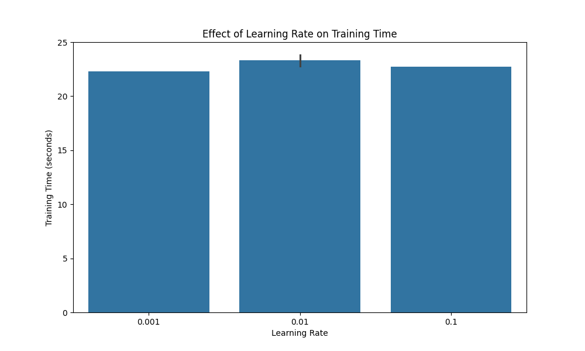

Course: Introduction to Artificial Intelligence
Instructor: Daniel Marczak
Date: Summer 2025
Students: Bora Ilci, Kaan Emre Kara
This report presents the implementation and evaluation of a multilayer perceptron (MLP) for image classification on the KMNIST dataset. The neural network is trained using the mini-batch gradient descent method, with the dataset split into training and validation sets to monitor performance and prevent overfitting.
The main objective of this lab is to evaluate how various components and hyperparameters of a neural network affect its performance in terms of:
The lab investigates the effects of varying the following hyperparameters:
The KMNIST (Kuzushiji-MNIST) dataset consists of 28×28 grayscale images of handwritten Japanese characters. The dataset is divided into 60,000 training examples and 10,000 test examples. For our experiments, we further split the training set into 80% for training and 20% for validation.
We implemented a multilayer perceptron (MLP) with the following components:
For training the neural network, we implemented the following procedure:
The implementation uses PyTorch for building neural network layers and handling gradient computations. The key components include:
We tested three different learning rates: 0.001, 0.01, and 0.1, while keeping other parameters fixed (batch size = 32, hidden layers = 1, hidden size = 128, optimizer = SGD with momentum).
Observations:
We experimented with three different batch sizes: 1 (stochastic gradient descent), 32, and 128, while keeping other parameters fixed (learning rate = 0.01, hidden layers = 1, hidden size = 128, optimizer = SGD with momentum).
Observations:
We evaluated the effect of varying the number of hidden layers: 0 (linear model), 1, and 3, while keeping other parameters fixed (learning rate = 0.01, batch size = 32, hidden size = 128, optimizer = SGD with momentum).
Observations:
We tested three different hidden layer sizes: 64, 128, and 256 neurons, while keeping other parameters fixed (learning rate = 0.01, batch size = 32, hidden layers = 1, optimizer = SGD with momentum).
Observations:
We compared three different optimizers: SGD, SGD with momentum, and Adam, while keeping other parameters fixed (learning rate = 0.01, batch size = 32, hidden layers = 1, hidden size = 128).
Observations:
We compared training and validation accuracies across all experiments to check for overfitting.
Observations:
Based on our experiments, the best performing models were:
| Rank | Model Configuration | Validation Accuracy | Test Accuracy | Training Time (s) |
|---|---|---|---|---|
| 1 | 3 hidden layers, 128 neurons, lr=0.01, batch size=32, SGD with momentum | 95.46% | 89.16% | 25.65 |
| 2 | 1 hidden layer, 256 neurons, lr=0.01, batch size=32, SGD with momentum | 95.30% | 89.53% | 24.67 |
| 3 | 1 hidden layer, 128 neurons, lr=0.01, batch size=32, SGD with momentum | 95.09% | 87.93% | 24.63 |
The worst performing models were:
| Rank | Model Configuration | Validation Accuracy | Test Accuracy | Training Time (s) |
|---|---|---|---|---|
| 1 | 1 hidden layer, 128 neurons, lr=0.01, batch size=1, SGD with momentum | 9.87% | 10.01% | 152.88 |
| 2 | 1 hidden layer, 128 neurons, lr=0.1, batch size=32, SGD with momentum | 30.47% | 22.56% | 22.65 |
| 3 | 0 hidden layers (linear), lr=0.01, batch size=32, SGD with momentum | 79.57% | 67.01% | 213.88 |
From our experiments with the KMNIST dataset, we can draw the following conclusions about neural network hyperparameters:
The learning rate significantly affects model convergence. A too-high learning rate (0.1) can prevent convergence entirely, while a too-low rate (0.001) slows down training without necessarily improving final performance. A moderate learning rate (0.01) provided the best balance for our task.
Batch size dramatically affects both training dynamics and computational efficiency:
More complex architectures generally performed better:
For this specific task with the given learning rate:
Several key takeaways from our experiments:
Overall, the best model achieved a validation accuracy of 95.46% and a test accuracy of 89.16%, demonstrating effective learning of the KMNIST classification task.